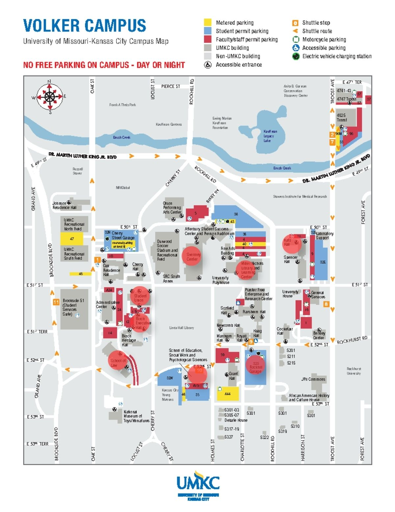

Interactive Dijkstra Model
Jake and Chris mini project for Discrete Structures II
Controls:
- Click on the canvas to add vertices
- Click on a vertex to select it
- 1) To create an edge, select a second vertex to connect them
- 2) To deselect a vertex, click on empty space after one is selected
UMKC Campus Demo Map
